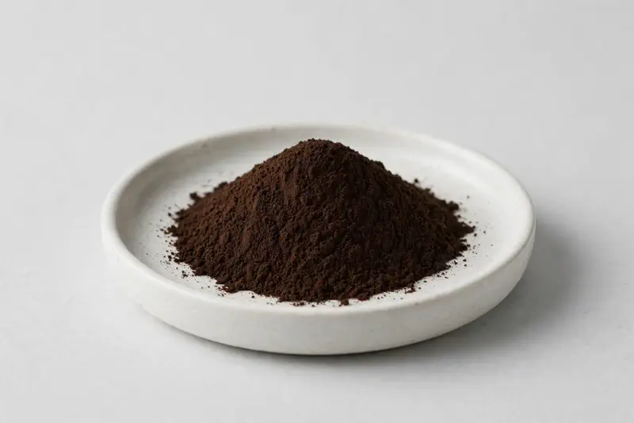

Noni — a tropical fruit extract powder offered in flexible ratio grades for juice-powder and wellness-blend formulations.

Overview
Noni Extract is produced from the fruit of Morinda citrifolia, a tropical plant long used in Pacific island food and botanical traditions. Buyers commonly request 4:1, 10:1 and 20:1 ratio grades for juice-powder concepts, drink mixes and wellness blends. We are a Xi'an-based trading company sourcing through vetted partner producers and confirming each target specification honestly.
Specifications below reflect commonly requested options in the market — not a stock list. Share your target spec and we'll confirm exactly what we can supply, honestly.
| Specification | Details |
|---|---|
| Botanical identity | Noni fruit extract powder (Morinda citrifolia fruit) |
| Marker compound | Commonly requested spec grades: 4:1, 10:1, 20:1 ratio extracts |
| Appearance | Deep dark brown fine powder |
| Mesh size | Typically 80–100 mesh (confirm per inquiry) |
| Testing | COA/TDS arranged on request; scope agreed per your spec |
Applications
Documentation
We don't claim in-house labs or certifications we don't hold. COA and TDS documents can be arranged on request, and testing scope is agreed against your specification before supply.
FAQ
Related products
Nattokinase (fermented soybean enzyme)
Key marker: 20,000-40,000 FU/g
View specs →Spermidine (wheat germ-derived polyamine)
Key marker: 0.5-1% Spermidine
View specs →Phosphatidylserine
Key marker: 20-50% PS
View specs →Plantago ovata
Key marker: 95%+ / 99% food-grade
View specs →Bos taurus
Key marker: IgG 20-40%
View specs →Send your target spec and volumes — we'll respond with a tailored quotation.
Request a Quote